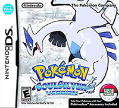
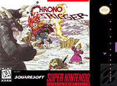
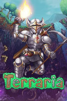
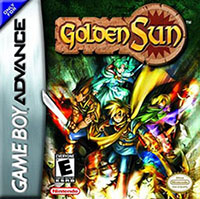
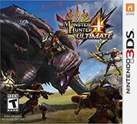
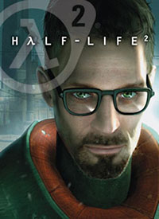
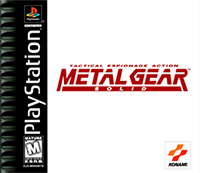
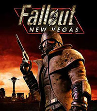
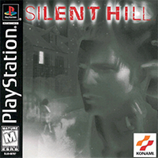
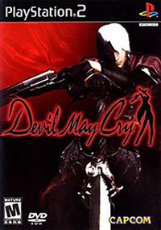

This is one of the first video games I ever played, and one I played a ton as a kid so it holds a special place in my heart. Still the best Pokemon game to date in my opinion.

One of the greatest games of all time. The amazing soundtrack and character design by the late Akira Toriyama remains timeless. If you haven't played it yet you're missing out.

One of the first PC games I played when I got a computer. It's a game I always come back to whether its by myself or with friends. I have almost 1000 hours on it and that number will only go up with the game's infinite replayability.

Another classic RPG series on the Gameboy Advance. It has fun turn based combat and has puzzle solving akin to The Legend of Zelda.

Monster Hunter is probably my favorite game series because of its satisfying action combat. I've played most of the games but I think 4 Ultimate still remains my favorite. Played it a lot as a kid and I still go back to it a lot.

I know this game was a big deal when it came out and it had impact on future first-person shooter games. Hopefully I can play it during the summer at some point.

I used to watch my brother play Metal Gear a lot as a kid but I never played it myself. I missed out on a lot of big Playstation games because I grew up primarily with Nintendo consoles.

Another game I would watch my brother play a lot. I've heard a lot of people say good things about it so I hope I get around to playing it this year.

I'm a big fan of horror and Silent Hill is a game I've had interest in for a while because of the music. Definitely a game I want to play around October.

Devil May Cry is a series I think I'd really like but I've never played any of the games. It has cool characters and the gameplay looks really stylish.